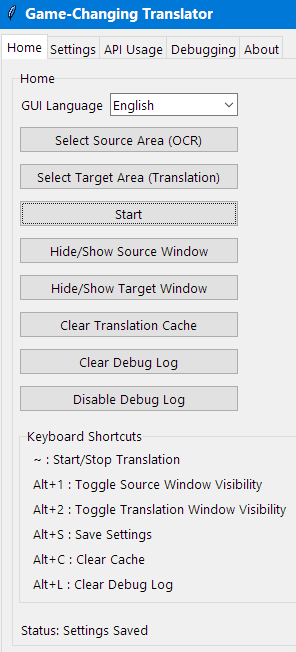
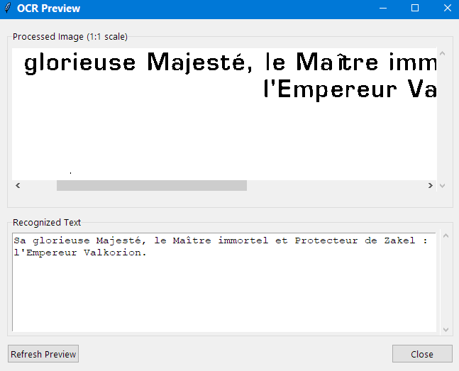
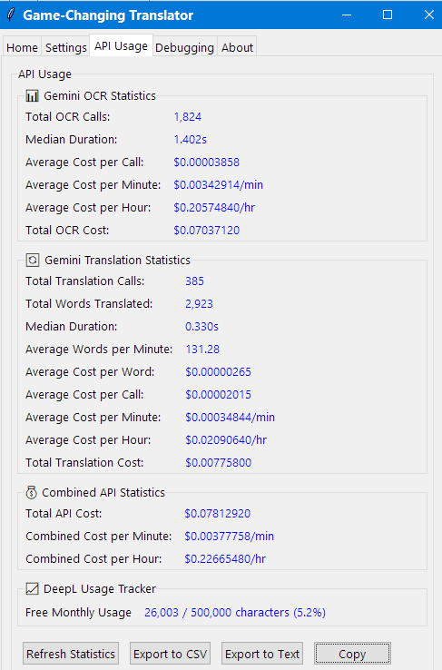
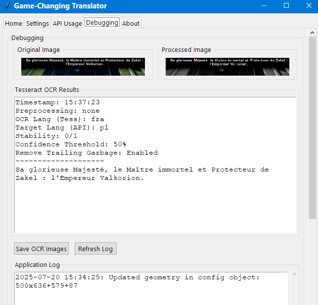

Game-Changing Translator User Manual
Copyright © 2025 Tomasz Kamiński
Last Updated: 20 July 2025

Table of Contents
-
Introduction
-
Getting Started
-
Main Interface
-
Setting Up Translation Areas
-
Settings Configuration
-
Gemini OCR - Premium Text Recognition
-
API Usage Monitoring
-
Translation Methods
-
Gemini API - Cost-Effective and Context-Aware Translation
-
Keyboard Shortcuts
-
Troubleshooting
-
Tips and Best Practices
Introduction
Game-Changing Translator is a desktop application that automatically captures text from any area of your screen, performs optical character recognition (OCR), and translates the text in real-time. With its floating overlay windows, you can position the translation anywhere on your screen, making it perfect for translating games, videos, PDFs, or any application with text that you can't easily copy and paste.
Getting Started
Requirements
Before using Game-Changing Translator , ensure you have:
- Windows operating system.
-
Tesseract OCR installed (only required when using Tesseract OCR, but recommended for standard scenarios with clear subtitles).
- The application installed according to the Installation Guide.
First Run
- Launch Game-Changing Translator by running the
main.py script or the executable if you're using a compiled version.
- On first startup, the application loads with default settings and both source and target areas are hidden.
- Before starting translation, you need to:
- Verify the Tesseract path in the Settings tab.
- Select source and target areas.
- Configure your preferred translation method.
- When you click Start, the translation window will automatically be shown.
- When you click Stop, the translation window will automatically be hidden.
- You can manually toggle the visibility of the translation window using Alt+2 at any time.
Main Interface
The main interface is organised into five tabs:
Home Tab

-
Select Source Area (OCR) – Define the area where text will be captured.
-
Select Target Area (Translation) – Define where the translated text will appear.
-
Start/Stop – Toggle the translation process on/off.
-
Hide/Show Source Window – Toggle visibility of the source capture area.
-
Hide/Show Target Window – Toggle visibility of the translation target area.
-
Clear Translation Cache – Clear translations stored in memory to force retranslation.
-
Clear Debug Log – Clear the application log.
-
Enable/Disable Debug Log – Disable debug logging for improved performance.
-
Keyboard Shortcuts – List of available hotkeys.
-
Status – Current application status.
Settings Tab

Here you can configure:
-
Translation Model – Select between different translation providers.
-
OCR Model – Choose between Tesseract (offline) and Gemini API (online).
-
Source Language – The language to detect with OCR and translate from (DeepL and Google Translate only).
-
Target Language – The language to translate into (DeepL and Google Translate only).
-
API Key – For DeepL or Google Translate.
-
Quality – Choose between Classic (faster) or Next-gen (potentially better quality) models (DeepL only).
-
MarianMT Options – For offline neural translation (MarianMT-specific).
-
Gemini Options – For cost-effective AI translation with context awareness (Gemini-specific).
-
Tesseract Path – Path to the Tesseract OCR executable (Tesseract only).
-
Scan Interval (ms) – How frequently to capture the screen.
-
Clear Translation Timeout (s) – Time before clearing translations when source text disappears.
-
Text Stability Threshold – How many consistent readings needed before translation (Tesseract only).
-
OCR Confidence Threshold – Minimum confidence for OCR text detection (Tesseract only).
-
Image Preprocessing Mode – How to process images for OCR (Tesseract only).
-
OCR Debugging – Option to show debug images and text in the Debugging tab (Tesseract only).
-
Preview button – Opens OCR Preview window (Tesseract only).
-
Remove Trailing Garbage – Option to remove text after the last punctuation mark (Tesseract only).
-
Appearance Options – Colours and font sizes for overlays.
-
File Caching Options – Settings to enable/disable caching for DeepL and Google Translate.
OCR Preview (Tesseract only)

Clicking the Preview button on the Settings tab opens a separate OCR Preview window when using Tesseract OCR. This window displays:
-
Processed Image (1:1 scale) – The preprocessed image being used for OCR recognition.
-
Recognized Text – The text currently being recognised by the OCR engine.
This preview window is particularly useful for fine-tuning OCR settings and understanding why certain text might not be recognised properly. It can be moved and resized independently of the main application window.
API Usage Tab

This tab provides comprehensive monitoring and analysis of your Gemini API usage, including:
-
Gemini OCR Statistics – Cost tracking and performance metrics for OCR operations.
-
Gemini Translation Statistics – Word counts, costs, and efficiency metrics for translations.
-
Combined API Statistics – Overall cost analysis and projections.
-
DeepL Usage Tracker – Monitor free monthly limits for DeepL API.
-
Export and Management Tools – Export statistics to CSV/text and copy to clipboard.
For detailed information about all available statistics and cost tracking features, see the API Usage Monitoring section.
Debugging Tab

This tab shows:
-
Original Image – The raw captured image.
-
Processed Image – The image after preprocessing for OCR.
-
OCR Results – Text detected by OCR.
-
Application Log – Running log of application events.
-
Save OCR Images and Refresh Log – Buttons to save debug images and refresh the log.
About Tab
This tab provides basic information about the application.
Setting Up Translation Areas
Selecting the Source Area
- Click Select Source Area (OCR) button.
- Your screen will dim, and you'll see see a black cross.
- Click and drag to select the area containing text you want to translate.
- After selection, a semi-transparent overlay window appears at the selected location.
- This overlay are hidden by default when the application starts.
- This overlay can be:
- Moved: Drag from the title bar.
- Resized: Drag from any edge or corner.
- Hidden/Shown: Use the Hide/Show Source Window button or Alt+1 hotkey.
Selecting the Target Area
- Click Select Target Area (Translation) button.
- Your screen will dim, and you'll see a black cross.
- Click and drag to select where you want translations to appear.
- After selection, a semi-transparent overlay window appears at the selected location.
- This overlay are hidden by default when the application starts.
- This overlay can be:
- Moved: Drag from the title bar.
- Resized: Drag from any edge or corner.
- Hidden/Shown: Use the Hide/Show Target Window button or Alt+2 hotkey.
Settings Configuration
Translation Configuration
-
Translation Model:
-
MarianMT (offline and free) – No API key needed, downloads models on first use, works offline.
-
DeepL API – Requires API key, high-quality translations.
-
Google Translate API – Requires API key, supports many languages.
-
Source Language:
- Language to translate from.
- The OCR engine will use this language for text recognition to improve accuracy.
- When you change the source language for translation, the OCR language is updated accordingly.
-
Target Language:
- Language to translate into.
- Note that not all language pairs are supported by all translation methods.
OCR Configuration
-
OCR Model:
-
Tesseract (offline) – Traditional OCR engine, free and works offline. Recommended for clear subtitles with good contrast (e.g., white text on dark backgrounds).
-
Gemini API (online) – Premium AI-powered OCR with superior accuracy for challenging subtitles. Requires API key and internet connection.
- When using Gemini OCR, only the Scan Interval setting applies to OCR operations.
-
Tesseract Path (Tesseract only):
- Should point to your Tesseract installation (e.g.,
C:\Program Files\Tesseract-OCR\tesseract.exe).
- Use the Browse button to locate it if needed.
-
Image Preprocessing Mode (Tesseract only):
-
None – No preprocessing, good for clear text.
-
Binary – Black and white conversion, good for high contrast text.
-
Binary Inverted – Inverted binary, good for white text on dark backgrounds.
-
Adaptive – Advanced adaptive thresholding for challenging environments.
-
Adaptive Mode (Tesseract only):
When you select Adaptive preprocessing mode, the system unlocks sophisticated adaptive thresholding capabilities that excel in challenging visual environments. This mode is particularly valuable when dealing with difficult conditions such as small subtitle text overlaid on dynamic, flickering backgrounds with constantly changing colours and lighting.
Unlike the three standard preprocessing modes, Adaptive mode provides two adjustable parameters that allow you to fine-tune the OCR recognition process:
- Block Size – Controls the size of the neighbourhood area used for calculating the threshold value. Larger values (e.g., 15–25) work better for text with gradual lighting changes, whilst smaller values (e.g., 7–13) are more effective for text with sharp contrast variations.
- C Value – Acts as a constant subtracted from the mean threshold. Positive values make the thresholding more conservative (less text detected but higher accuracy), whilst negative values make it more aggressive (more text detected but potentially more noise).
This mode proves invaluable when standard preprocessing fails to produce reliable results. By experimenting with these two parameters, you can often achieve superior OCR recognition compared to the ready-to-use modes, particularly in scenarios where backgrounds contain moving elements, varying illumination, or complex visual patterns that would otherwise interfere with text detection.
For optimal results, start with moderate values (Block Size: 11, C Value: 2) and adjust based on your specific content. Increase Block Size for larger text or gradual lighting changes, and adjust C Value to balance between capturing all text and reducing false positives.
-
OCR Confidence Threshold (Tesseract only):
- Higher values (e.g., 80) give fewer but more accurate results.
- Lower values (e.g., 40) catch more text but may include errors.
-
Text Stability Threshold (Tesseract only):
- How many identical OCR readings needed before translation.
- Higher values reduce flickering but increase delay.
- Set to 0 for instant translation (may cause flickering).
-
OCR Debugging (Tesseract only):
- When enabled, shows captured images and OCR results in the Debugging tab.
- Useful for troubleshooting recognition issues.
-
Remove Trailing Garbage (Tesseract only):
- When enabled, removes any text that appears after the last punctuation mark (period, exclamation point, or question mark).
- Useful for cleaning up OCR errors that often appear at the end of recognised text.
- Helps improve translation quality by removing random characters or partial words.
-
Scan Interval (ms):
- Time in milliseconds between screen captures.
- Lower values (e.g., 50ms) give faster response but use more CPU.
- Higher values (e.g., 500ms) use less CPU but respond slower.
-
Clear Translation Timeout (s):
- Time in seconds before clearing the translation when source text disappears.
- If the source area still contains text after the timeout period, the translation will remain visible.
- Only clears the translation when no text is detected in the source area.
- Set to 0 to keep translations visible indefinitely.
-
Clear Translation Cache:
- This button clears translations that are temporarily stored in the application's memory.
- The memory cache stores recent translations to avoid re-translating identical text immediately.
- Clearing this cache forces the application to retranslate all text, even if it was recently processed.
- This is different from file caching – it only affects translations stored in RAM during the current session.
- Useful when you want to see fresh translations or if cached results seem incorrect.
-
File Caching Options (API Translation Services Only):
-
Enable Google Translate file cache – Uses the same caching system as DeepL (see DeepL section for detailed explanation).
-
Enable DeepL file cache – Saves DeepL translations to disk files to reduce API calls.
- These options help reduce API usage and costs for paid services.
- The Clear File Caches button removes all cached translations stored in files.
- These settings do not apply to MarianMT since it works offline.
-
Debug Logging:
-
Disable Debug Log – Permanently disables debug logging to improve application performance.
- Once disabled, debug information will no longer be written to the log file.
- This can provide a noticeable performance improvement in resource-constrained environments.
- The setting persists between application sessions.
Appearance Settings
-
Source Area Colour – Background colour of the source capture overlay (customisable).
-
Target Area Colour – Background colour of the translation overlay (customisable).
-
Target Text Colour – Colour of the translated text (customisable).
-
Target Window Font Size – Size of the translated text.
Gemini OCR - Premium Text Recognition
Gemini OCR represents a revolutionary advancement in text recognition technology, providing superior accuracy for challenging subtitle scenarios where traditional OCR engines like Tesseract struggle. This premium feature leverages Google's Gemini 2.5 Flash-Lite model to deliver exceptional OCR results at an outstanding cost-to-quality ratio.
Challenging Subtitles Scenarios
Gemini OCR excels in scenarios where subtitles are difficult to recognise due to:
- Complex backgrounds with changing colours and textures.
- Low contrast text overlaid on dynamic scenes.
- Small or stylised fonts that confuse traditional OCR.
- Motion blur or compression artefacts in video content.
OCR Comparison Examples

Tesseract OCR Result: ~ Trust me, OD tite WE loca mS
Gemini OCR Result: Trust me, Oakmonters know a newcomer when they see one. We locals can tell.

Tesseract OCR Result: ' Paulie: Driv: show, Tom. Next stop's Bi the motel. 7 jj ie
Gemini OCR Result: Paulie: Drive before the cops show, Tom. Next stop's Bill at the motel.
Superior Premium Feature
Gemini OCR is a premium feature that significantly outperforms traditional OCR methods. It is particularly recommended for scenarios where:
- Subtitles are challenging to recognise with standard OCR.
- Subtitles are displayed for 1 second or more on average.
- Quality is prioritised over speed for critical content.
Performance and Cost:
- OCR API calls typically take 0.8–1.5 seconds to process.
- OCR translation calls require an additional 0.3 seconds.
- Expected cost: approximately $0.3–0.4 per hour or $1.3–1.4 per 10 hours with 0.5s scan interval.
- Actual costs may vary depending on your specific use case and subtitle complexity.
Outstanding Cost-to-Quality Ratio
Gemini 2.5 Flash-Lite delivers exceptionally fast and accurate OCR results that significantly surpass Tesseract or Paddle OCR. While results may occasionally be less consistent than Google Cloud Vision API, the cost-to-quality ratio is unmatched among both free and paid OCR solutions.
Cost Comparison:
- Gemini 2.5 Flash-Lite: ~$0.00004 per subtitle screenshot.
- Google Cloud Vision API: ~$0.0015 per subtitle screenshot.
- Cost difference: Gemini is 37.5 times cheaper ($0.04 vs $1.5 per 1000 API calls).
Best Practices with Gemini OCR
- Minimum scan interval: Use at least 500ms scan interval, which is sufficient for most scenarios.
- Extended intervals for long content: In games with lengthy subtitles (e.g., The Witcher series), consider increasing the scan interval to minimise costs while maintaining quality.
- Wider capture areas: Unlike traditional OCR engines, LLMs provide better results with broader context. Select a wide area around subtitles rather than tight cropping for consistent, accurate recognition of identical text displayed over several seconds.
The API Usage tab (detailed in the next section) helps you monitor costs and estimate expenses for your specific use cases, ensuring you can optimise your OCR usage while maintaining excellent quality.
API Usage Monitoring
The API Usage tab provides comprehensive monitoring and cost analysis for Gemini API usage, helping you track expenses and optimise your API consumption for both OCR and translation services.
This tab displays detailed statistics across several categories:
📊 Gemini OCR Statistics
- Total OCR Cost – Cumulative cost of all OCR API calls.
- Total OCR Calls – Number of OCR requests sent to the API.
- Median Duration – Typical response time for OCR requests.
- Average Cost per Call – Mean cost for individual OCR operations.
- Average Cost per Minute/Hour – Cost projections for sustained usage.
🔄 Gemini Translation Statistics
- Total Translation Calls – Number of translation requests sent.
- Total Words Translated – Count of words processed through the API.
- Median Duration – Typical response time for OCR requests.
- Average Words per Minute – Translation throughput metrics.
- Average Cost per Word/Call – Unit costs for translation operations.
- Average Cost per Minute/Hour – Cost projections for sustained usage.
- Total Translation Cost – Cumulative cost of all translation API calls.
💰 Combined API Statistics
- Total API Cost – Overall cost across all Gemini API services.
- Combined Cost per Minute/Hour – Unified cost projections.
📈 DeepL Usage Tracker
- Free Monthly Usage – Monitor progress towards your DeepL free tier limits.
Statistics Management
The tab includes several management options:
- Refresh Statistics – Update all displayed data with current usage.
- Export to CSV – Export detailed statistics for external analysis.
- Export to Text – Generate human-readable usage reports.
- Copy – Copy statistics to clipboard for sharing.
Important Note: Statistics are based on API_OCR_short_log.txt and API_TRA_short_log.txt files. Data will reset if these files are deleted.
❗
Important: Cost tracking is provided for reference purposes only. You remain responsible for monitoring your own API usage and costs through Google's billing dashboard.
Translation Methods
Gemini API (Recommended)
Gemini 2.5 Flash-Lite is Google's latest cost-efficient AI model that delivers exceptional translation quality with intelligent context awareness. This breakthrough technology combines premium translation quality with unprecedented affordability, making it ideal for translating massive projects like entire games for just a few dollars.
Key Advantages:
- Context-Aware Translation – Uses sliding window context to maintain narrative coherence and improve grammar.
- OCR Error Intelligence – Automatically corrects OCR imperfections, producing clean translations from garbled input.
- Exceptional Cost-to-Quality Ratio – Translate entire games like Witcher 3 for under $5, even with multiple OCR attempts.
- Built-in Cost Tracking – Real-time monitoring of translation costs and token usage.
- Advanced Caching – Intelligent file caching to minimize API costs.
Gemini API is the recommended translation method for most users seeking the best balance of quality, intelligence, and affordability. For detailed configuration options, advanced features, and cost optimization strategies, see the complete Gemini API guide.
MarianMT (offline and free)
- No API key required – completely free to use.
- Works entirely offline once models are downloaded.
- Models are downloaded automatically when first used (~500MB per language pair).
- Configure by:
- Selecting MarianMT (offline and free) as Translation Model.
- Selecting a language pair from the MarianMT Model dropdown.
- Adjusting the Translation Beam Size (MarianMT) (higher values = better quality but slower).
MarianMT models are open-source neural machine translation systems that offer quite good translation quality. Whilst not quite reaching the standards of premium services like DeepL, they provide remarkably solid translations without any cost or internet requirement after the initial model download.
These models were originally designed for translating short, single sentences and would typically truncate longer passages. However, Game-Changing Translator implements a clever workaround to this limitation. The application automatically splits longer texts into individual sentences and processes them efficiently using batch translation. All sentences are processed together in a single, optimized model inference call, then seamlessly stitched back together, ensuring you receive complete translations regardless of text length.
This approach offers several practical advantages:
- Complete privacy – your text never leaves your computer.
- No usage limits or subscription costs.
- Continues working during internet outages.
- No API latency – translations happen at the speed of your computer.
The Translation Beam Size (MarianMT) setting allows you to balance between speed and quality. Higher values (8–12) produce more refined translations but require more processing time, whilst lower values (1–4) prioritise speed over perfect phrasing.
⚠️
NOTE: The English-to-Polish model takes a bit longer to install when first selected, as it needs to be downloaded and converted from a different source than the other MarianMT models.
DeepL API
- Requires a DeepL account and API key.
- Offers premium-quality translations but supports fewer languages.
- Regarded by many as the industry leader in translation quality.
- The DeepL API Free plan allows for the translation of 500,000 characters per month free of charge (as at May, 2025).
- DeepL usage is tracked in the API Usage tab for comprehensive monitoring alongside other API services.
- Configure by:
- Selecting DeepL API as Translation Model.
- Entering your API key in the Settings tab (DeepL-specific setting).
- Choosing your preferred Quality option:
- Classic – Faster processing with excellent quality
- Next-gen – Slightly slower but potentially even better quality for some content
- If you don't have an API key, see the Installation Guide.
Quality Options
DeepL offers two quality modes to suit different needs. The Classic model provides fast, high-quality translations that work with all supported language pairs. The Next-gen model uses DeepL's latest translation technology, which can deliver even better results for certain types of content, though it processes slightly slower and may not support all language pairs.
If you select Next-gen and your chosen language pair isn't supported, the application will automatically fall back to Classic mode to ensure your translation continues working seamlessly. Both options deliver top-quality results that DeepL is renowned for.
DeepL File Caching System
Game-Changing Translator implements a caching system for DeepL translations. Once a text segment has been translated, it's stored in the application's local cache (deepl_cache.txt). When the same text appears again, the application retrieves the translation from the cache instead of sending another API request.
It's important to understand that this caching mechanism relies entirely on OCR quality. For a cache match to occur, the OCR'd text must be identical – down to the last character – with what is stored in the cache. Even a single character difference will result in a new API call and translation. This means the actual efficiency of the cache depends heavily on consistent OCR results.
The cache can be helpful for gamers in specific scenarios. For instance, if you're playing a game where static menu options or repeated dialogue appear in exactly the same font, size, and screen position, the OCR is more likely to produce identical results each time. However, if text appears with different backgrounds, lighting, or slight position shifts, OCR variations will likely trigger new translations.
For example, a game's Save Game button might consistently be recognised identically and benefit from caching, while dynamic dialogue with changing characters or backgrounds might produce slightly different OCR results each time, limiting cache effectiveness.
The cache persists between application sessions, but its practical benefit should be viewed as a helpful bonus rather than a major API-saving feature. The more consistent and clear the text presentation, the more likely you are to benefit from the caching system.
Google Translate API
- Requires a Google Cloud account and API key.
- Supports the widest range of languages.
- Good for general purpose translation with broad language coverage.
- Configure by:
- Selecting Google Translate API as Translation Model.
- Entering your API key in the Settings tab (Google Translate-specific setting).
- If you don't have an API key, see the Installation Guide.
Google Translate uses the same file caching system as DeepL. Please refer to the DeepL API section above for a detailed explanation of how the caching mechanism works, its dependencies on OCR quality, and its practical benefits and limitations. All the same considerations and notes apply to Google Translate's caching functionality.
Gemini API - Cost-Effective and Context-Aware Translation
Gemini 2.5 Flash-Lite represents a breakthrough in AI translation technology, offering premium-quality translations with unprecedented cost-effectiveness. This advanced model combines intelligent context awareness with remarkable affordability, making it possible to translate massive gaming projects for a fraction of traditional costs.
Superior Translation Quality
Context Window Technology
Unlike traditional translation services that process each subtitle in isolation, Gemini API features a configurable sliding context window that maintains awareness of previous translations. This revolutionary approach ensures narrative coherence, improves grammar flow, and delivers translations that understand the broader context of conversations and storylines.
The context window can be configured to include 0-5 previous subtitles, allowing the AI to:
- Maintain character voice consistency across dialogue.
- Preserve narrative continuity in story-driven content.
- Improve pronoun resolution and grammatical agreement.
- Deliver more natural, idiomatic translations.
Example: Context-Aware Translation
This example demonstrates how context awareness helps maintain proper grammar when translating Czech to Polish:
| Czech Original |
DeepL (No Context) |
Gemini (With Context) |
English Translation |
A vodkaď se podle tebe teda známe? |
A skąd się znamy, według ciebie? |
A skąd niby się znamy? |
And how do we supposedly know each other? |
Viděli jsme se přece u toho rybníka! |
Widzieliśmy się przecież nad stawem! |
Widzieliśmy się przecież nad tamtym stawem! |
We saw each other at that pond! |
Jakýho rybníka? Já u žádnýho rybníka nebyla! |
Jakiego stawu? Nie byłam przy żadnym stawie! |
Nad jakim stawem? Ja nad żadnym stawem nie byłam! |
What pond? I wasn't at any pond! |
Ale jo, byla! |
Ale tak, była! |
Ale tak, byłaś! |
But yes, you were! |
Key Improvements with Context:
- "Jakiego stawu?" vs "Nad jakim stawem?" – Gemini correctly uses "nad" (at/by) to match the previous sentence's reference to being "nad stawem", while DeepL uses the generic genitive case.
- "była!" vs "byłaś!" – Gemini correctly uses the second person feminine form "byłaś" (you were) to maintain dialogue consistency, while DeepL uses the third person form "była" (she was).
These examples clearly demonstrate how Gemini's context window helps maintain grammatical consistency and dialogue flow that would be impossible with sentence-by-sentence translation.
OCR Error Intelligence
One of Gemini's most impressive capabilities is its ability to interpret and correct OCR imperfections automatically. When text recognition produces garbled or incomplete results, Gemini's advanced language understanding can often deduce the intended meaning and provide clean, accurate translations without replicating OCR errors in the output.
Example: OCR Error Correction
Here's a real-world example showing how Gemini handles OCR errors compared to DeepL when translating French to English:
| OCR Input |
DeepL Output |
Gemini Output |
Analysis |
Vraiment ? |
Really? |
Really? |
Clean OCR, both work well |
| Vraiment ? |
| Really? |
Really? |
Gemini removes OCR artifact "|", DeepL replicates it |
Exceptional Cost-Effectiveness
Real-World Cost Analysis
Gemini API offers extraordinary value for large translation projects. Even massive games like The Witcher 3, with hundreds of hours of dialogue and subtitles, can be translated for under $5 total cost. This remains true even when accounting for:
- Multiple OCR attempts due to recognition variations.
- Context window overhead (sending 1-2 previous subtitles with each request).
- Cache misses requiring fresh API calls.
- Complex narrative content requiring longer context.
Cost Estimate: The Witcher 3 Translation
Here is a detailed cost analysis for translating The Witcher 3 subtitles using DeepL and Gemini 2.5 Flash-Lite:
Assumptions:
- Word Count: 450,000 words.
- OCR Inaccuracy: Each subtitle is sent 3 times for translation.
- Average Word Length: 5 characters.
- Tokens per Word: 2 tokens per word.
- Gemini Context: Each input message is 4 times longer than the actual subtitle.
- DeepL API Pro Cost: €20.00 per 1 million characters.
- Gemini 2.5 Flash-Lite Cost: $0.10 per 1 million input tokens and $0.40 per 1 million output tokens.
- EUR to USD Exchange Rate: 1.08.
Cost Breakdown:
DeepL:
- Total Characters: 450,000 words × 5 characters/word = 2,250,000 characters.
- Total Characters with OCR Inaccuracy: 2,250,000 × 3 = 6,750,000 characters.
- Estimated Cost (EUR): (6,750,000 ÷ 1,000,000) × €20.00 = €135.00.
- Estimated Cost (USD): €135.00 × 1.08 = $145.80.
Gemini 2.5 Flash-Lite:
- Total Tokens: 450,000 words × 2 tokens/word = 900,000 tokens.
- Total Tokens with OCR Inaccuracy: 900,000 × 3 = 2,700,000 tokens.
- Input Tokens: 2,700,000 × 4 = 10,800,000 tokens.
- Input Cost: (10,800,000 ÷ 1,000,000) × $0.10 = $1.08.
- Output Tokens: 2,700,000 tokens.
- Output Cost: (2,700,000 ÷ 1,000,000) × $0.40 = $1.08.
- Total Estimated Cost (USD): $1.08 (input) + $1.08 (output) = $2.16.
| Service |
Estimated Cost (EUR) |
Estimated Cost (USD) |
| DeepL |
€135.00 |
$145.80 |
| Gemini 2.5 Flash-Lite |
— |
$2.16 |
Note: These are rough estimates. Actual costs depend on language pair, OCR accuracy, context settings, and cache effectiveness.
❗
Disclaimer: Cost tracking is provided for reference purposes only. This is free software with no guarantees regarding cost accuracy. Users are responsible for monitoring their own API usage and costs through Google's billing dashboard.
Built-in Cost Tracking
Game-Changing Translator includes comprehensive cost monitoring specifically designed for Gemini API usage:
- Real-time Cost Display – See cumulative costs update as you translate.
- Token Usage Analytics – Track exact input/output token consumption.
- API Call Logging – Optional detailed logging for complete transparency in
Gemini_API_call_logs.txt.
- Shorter API Logs – Condensed logs in
API_TRA_short_log.txt for streamlined cost tracking.
- Word Count Tracking – Monitor total words translated across sessions.
- Integrated Monitoring – Track both Gemini OCR and translation costs together in the API Usage tab.
Detailed API Call Example
Here's a real example of how the API call logging works, showing the complete translation process:
=== GEMINI API CALL LOG ===
Timestamp: 2025-07-06 17:19:03
Language Pair: fr -> en
Original Text: Vous avez manipulé des civilisations entières, provoqué des décennies de guerre, détruit Ziost... et pris la fuite. Vous allez me dire pourquoi.
CALL DETAILS:
- Message Length: 695 characters
- Word Count: 119 words
- Line Count: 9 lines
COMPLETE MESSAGE CONTENT SENT TO GEMINI:
---BEGIN MESSAGE---
<Translate idiomatically the third subtitle from French to English. Return translation only.>
FRENCH: C'était mon objectif. Le reste... n'était qu'un moyen de parvenir à mes fins.
FRENCH: Vous dites que vous avez fait tout ce chemin pour me trouver. Me voici. Que voulez-vous ?
FRENCH: Vous avez manipulé des civilisations entières, provoqué des décennies de guerre, détruit Ziost... et pris la fuite. Vous allez me dire pourquoi.
ENGLISH: That was my goal. The rest... was merely a means to an end.
ENGLISH: You say you came all this way to find me. Here I am. What do you want?
ENGLISH:
---END MESSAGE---
RESPONSE RECEIVED:
Timestamp: 2025-07-06 17:19:03
Call Duration: 0.385 seconds
---BEGIN RESPONSE---
You manipulated entire civilizations, caused decades of war, destroyed Ziost... and fled. You're going to tell me why.
---END RESPONSE---
TOKEN & COST ANALYSIS (CURRENT CALL):
- Translated Words: 22
- Exact Input Tokens: 173
- Exact Output Tokens: 26
- Input Cost: $0.00001730
- Output Cost: $0.00001040
- Total Cost for this Call: $0.00002770
CUMULATIVE TOTALS (INCLUDING THIS CALL, FROM LOG START):
- Total Translated Words (so far): 18460
- Total Input Tokens (so far): 213723
- Total Output Tokens (so far): 30987
- Total Input Cost (so far): $0.02137230
- Total Output Cost (so far): $0.01239480
- Cumulative Log Cost: $0.03376710
========================================
This detailed logging is saved in the Gemini_API_call_logs.txt file. In the Settings tab, you'll find Total Words and Total Cost fields that display cumulative figures based solely on this log file. If the file is cleared or deleted, these totals will reset accordingly.
Configuration and Setup
- API Key Setup – Requires a Google AI Studio or Google Cloud account with Gemini API access. Go to Google AI Studio and click the "Get API key" button to set up an API key for Gemini models.
- Model Selection – Uses Gemini 2.5 Flash-Lite for optimal cost-quality balance.
- Context Window – Choose between:
- 0 (Disabled) – Fast, isolated translations.
- 1 (Last subtitle) – Basic context awareness.
- 2 (Two subtitles) – Enhanced context for narrative coherence.
- 3 (Three subtitles) – Extended context for complex dialogue.
- 4 (Four subtitles) – Extended context for Asian languages.
- 5 (Five subtitles) – Maximum context for Asian languages that rely heavily on context.
- Enable API Log – Optional detailed logging for cost analysis and debugging (API calls are saved in Gemini_API_call_logs.txt).
- Enable Gemini file cache – Enable to reduce API calls for repeated content (translations are saved in gemini_cache.txt).
- Temperature Setting – This setting can only be changed manually in the
ocr_translator_config.ini file. It is set at 0.0 by default (gemini_model_temp = 0.0), which is the recommended setting for consistent, deterministic translations.
Intelligent Caching System
Gemini API benefits from the same file caching system as DeepL and Google Translate. When caching is enabled, identical text segments are stored locally and retrieved without additional API calls. However, cache effectiveness depends on OCR consistency - even small recognition variations will trigger new API requests.
Cost Optimization Strategies:
- Use context window judiciously - higher settings provide better quality but increase token usage.
- Enable file caching for content with repeated elements.
- Position source areas precisely to improve OCR consistency.
- Use adaptive preprocessing modes for challenging text.
- Monitor the built-in cost tracker to understand usage patterns.
Comparison with Other Methods
| Feature |
Gemini API |
DeepL API |
Google Translate |
MarianMT |
| Translation Quality |
Excellent + Context |
Excellent |
Good |
Average to Good |
| Cost (Large Projects) |
Very Low |
High |
High |
Free |
| Context Awareness |
✅ Advanced |
❌ None |
❌ None |
❌ None |
| OCR Error Handling |
✅ Often removes errors |
❌ Often replicates errors |
❌ Often replicates errors |
❌ Often replicates errors |
| Cost Tracking |
✅ Built-in |
✅ Free Usage Tracker |
❌ External only |
N/A |
Gaming and Large Project Applications
Ideal for Gaming Translation
Gemini API excels in gaming scenarios where context and narrative flow are crucial:
- RPGs and Story-Driven Games – Context window maintains character voice and story coherence.
- Visual Novels – Superior handling of dialogue and narrative progression.
- Subtitle-Heavy Content – Intelligent error correction handles imperfect OCR from overlaid text.
- Multi-Character Dialogue – Context awareness improves pronoun resolution and speaker identification.
Keyboard Shortcuts
These keyboard shortcuts are available:
| Shortcut |
Function |
~ (tilde) |
Start/Stop Translation |
Alt+1 |
Toggle Source Window Visibility |
Alt+2 |
Toggle Translation Window Visibility |
Alt+S |
Save Settings |
Alt+C |
Clear Translation Cache |
Alt+L |
Clear Debug Log |
Note: When the application is stopped (translation inactive), the translation window will be hidden automatically. When the application is started, the translation window will appear automatically. You can manually override this behaviour using the Alt+2 shortcut at any time.
Troubleshooting
If you encounter issues:
- Check the Debugging tab for error messages and the application log.
- Enable OCR Debugging in Settings to see what's being captured and recognised in the Debugging tab. Also view the OCR Preview window (accessible in the Settings tab via the Preview button).
- Adjust settings as needed:
- Try different preprocessing modes, including Adaptive mode for challenging environments.
- Adjust confidence and stability thresholds.
- Verify source language is correct.
- Enable Remove Trailing Garbage to clean up OCR errors.
- Fine-tune Adaptive mode parameters if using challenging backgrounds.
- Consult the Troubleshooting Guide for common issues and solutions.
Tips and Best Practices
OCR Accuracy
For best OCR results:
- Capture clean, high-contrast text.
- Select appropriate source language.
- Adjust preprocessing mode to match text appearance – try Adaptive mode for difficult backgrounds.
- Resize the capture area to frame text closely but completely.
- Use a larger source area for more context if OCR is struggling.
- Enable Remove Trailing Garbage to clean up recognition artefacts.
- Adjust the confidence threshold to balance between capturing all text (lower values) and reducing errors (higher values).
- For small subtitles on changing backgrounds, experiment with Adaptive mode's Block Size and C Value parameters.
- Use a smaller source capture area.
- Click Disable Debug Log in the Home tab.
- Increase Scan Interval in the Settings tab to reduce CPU usage.
- Disable OCR Debugging in the Settings tab.
- Set the Image Preprocessing Mode to None in the Settings tab.
- For MarianMT:
- Lower Translation Beam Size (MarianMT) for faster translation.
- For DeepL or Google Translate:
- Enable file caching to improve performance with repetitive text.
Practical Applications
-
Games:
🎮
NOTE: Game-Changing Translator may not work correctly with some games in fullscreen mode.
We recommend using borderless windowed mode, which is supported by most modern games.
- Position source overlay over game subtitles or dialogue.
- Place target overlay in a less intrusive area.
- Use the Clear Translation Timeout to keep translations visible as long as text is present on screen.
- Enable Remove Trailing Garbage to clean up OCR errors common in game text.
- For games with challenging subtitle backgrounds, experiment with Adaptive mode settings.
-
Videos:
- Capture subtitle area.
- Adjust preprocessing if subtitles are embedded – Adaptive mode often works well for varying video backgrounds.
- For streaming content, set stability threshold lower (0–1) for faster response.
-
Documents & PDFs:
- Resize source window to capture paragraphs.
- Use stability threshold of 1–2 to reduce flickering when scrolling.
- For scientific or technical documents, increase confidence threshold to reduce errors.
-
Applications:
- Position overlays to avoid covering important UI elements.
- Use hotkeys to quickly toggle translation when needed.
- For applications with changing content, adjust the scan interval for optimal performance.